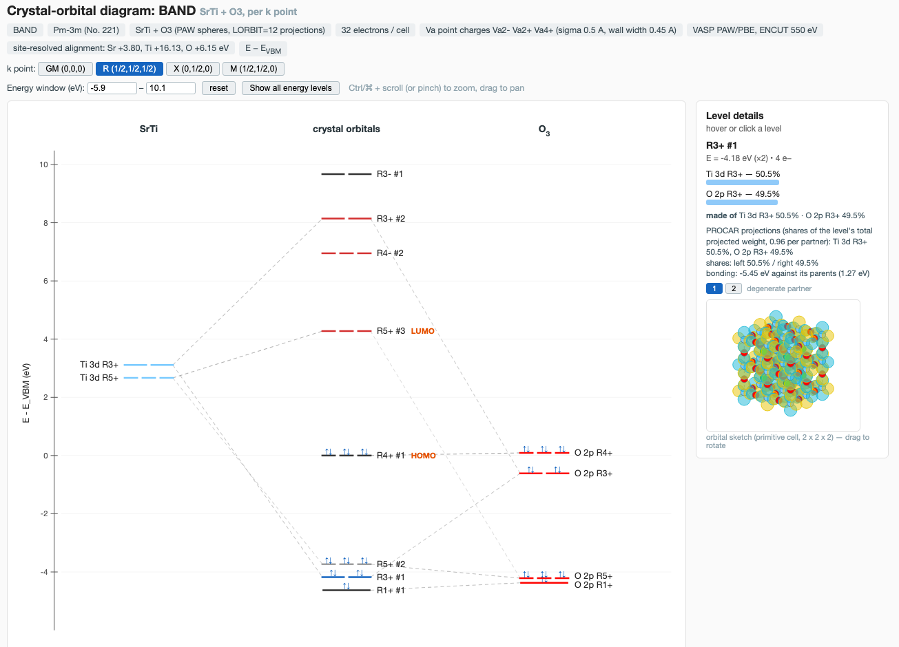
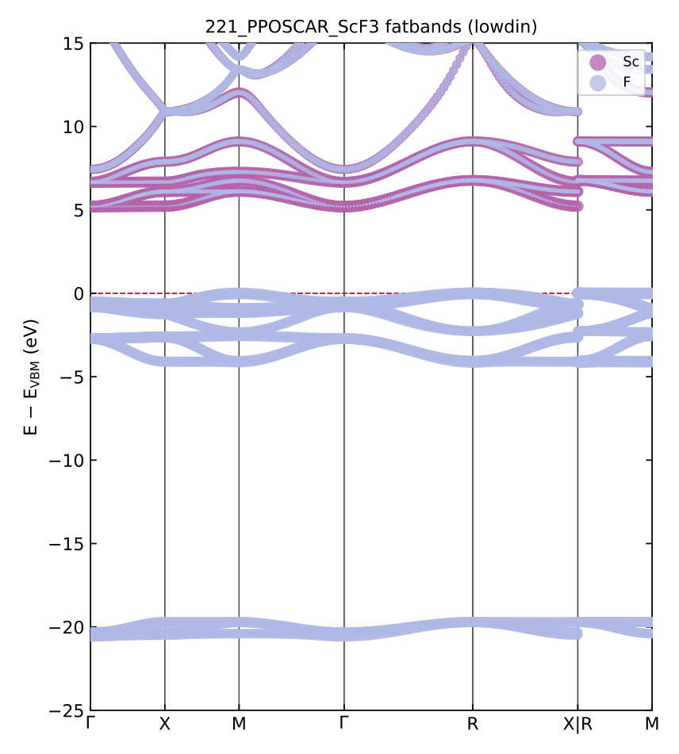

crystod (main command)#
The main command performs the SALC (symmetry-adapted linear combination)
analysis of crystal orbitals — no mode flag is needed. It also hosts the
crystal-orbital diagram (--diagram, with the band structure and DOS of the
same calculation), the interactive SALC viewer (--visualize) and the
star-of-k display (--star-of-k).
I want to … |
command |
|---|---|
know which irreps an orbital spans at every k point |
|
know which orbitals may hybridize at one k point |
|
draw the crystal-orbital diagram |
|
know whether the band-edge optical transition is dipole-allowed |
|
see the SALCs in 3D |
|
see the crystal eigen-levels and their wave functions in 3D |
|
list the arms of a star of k |
|
1. Theoretical background#
See also
Theory: 1. Theoretical background — the
representation matrices, the character/reduction formula and the projection
operator on which every command of this page (and of crystod-group /
crystod-mag) is built.
2. Irreps of SALC#
Example directory: example/02_salc (testsuite section 2)
Decompose the crystal orbitals built from a selected element/orbital into the irreducible representations of the little group at each special k point:
crystod -c example/test_POSCARs/221_PPOSCAR_SrTiO3 --element Ti --orbital d
* Crystal Orbitals *
k point (primitive): GM [0.0, 0.0, 0.0]
little group of k : Pm-3m (221)
irreps : 1.0 [GM3+(2)] + 1.0 [GM5+(3)]
k point (primitive): R [0.5, 0.5, 0.5]
little group of k : Pm-3m (221)
irreps : 1.0 [R3-(2)] + 1.0 [R4-(3)]
k point (primitive): X [0.0, 0.5, 0.0]
little group of k : P4/mmm (123)
irreps : 1.0 [X2-(1)] + 1.0 [X3-(1)] + 1.0 [X4-(1)] + 1.0 [X5-(2)]
k point (primitive): M [0.5, 0.5, 0.0]
little group of k : P4/mmm (123)
irreps : 1.0 [M1+(1)] + 1.0 [M3+(1)] + 1.0 [M4+(1)] + 1.0 [M5+(2)]
When --kpoint is omitted, all special k points of the space group are analyzed.
Any arm of a star and any copy k + G of a k point get the same labels; on a
symmetry line the label is evaluated at the canonical value of the line
parameter, and a k point whose star ISO-IR tabulates only through -k is
labelled with the complex conjugates of the tabulated irreps under the A
suffix (PA of I-4, labelled PA1, …, the conjugates of P1, …); on a
line that no symmetry element reverses, the star at the negative parameter is
named in the same way after ISOTROPY (LE for LD, DU for DT).
Names and labels refer to one frame: the special points are listed, and a
name given to --kpoint is resolved, in the frame of the labels, and given
coordinates are named by the same labeller, so a printed name has the
letters of the labels below it, also for an input outside the ISO-IR
setting (--visualize --kpoint and --star-of-k take seekpath names,
whose triclinic letters are not the ISO-IR ones; see
Irrep labels and the frame of a structure). The labels refer to one frame per structure: an input in the ISO-IR
setting keeps its own axes and origin (with Sr or Ti at the origin of SrTiO3
the octahedral tilt is R5- or R4+), and so does a diagonal
n1 x n2 x n3 supercell of it of any size, which is labelled like the
cell; any other input gets a canonical frame of the crystal, which keeps the
input’s own origin when that is the origin of a standard description. Shifted
copies of a crystal are therefore labelled alike whatever their orientation,
basis or cell size, but a non-diagonal supercell (sqrt2 x sqrt2 x 1) can get
other names than the cell, and an unshifted re-based cell other names than a
shifted copy of it — see
Irrep labels and the frame of a structure.
--show-irrep-table additionally prints the little-group character table at the
selected k point.
3. Crystal-orbital diagrams#
Example directory: example/03_hybridization (testsuite section 3)
Analyze the hybridization between selected atomic orbitals (ELEMENT_ORBITAL pairs):
crystod -c example/test_POSCARs/221_PPOSCAR_ScF3 --atomic-orbital Sc-d F-p --kpoint 0.5 0.5 0.5
* Result *
R1+(1): F(p)
R1-(1):
R2+(1):
R2-(1):
R3+(2): Sc(d) F(p)
R3-(2):
R4+(3): F(p)
R4-(3):
R5+(3): Sc(d) F(p)
R5-(3):
For each little-group irrep at the k point, the orbitals that transform as the relevant irreps are listed — orbitals sharing a line are symmetry-allowed to hybridize. We can see that Sc-d and F-p states can be hybridized when they are ruled by the irreps of R3+ and R5+.
Quantitative crystal-orbital diagrams using extended-Hückel engine (--diagram)#
--diagram draws the quantitative crystal orbital diagram (COD) — the
crystalline analogue of the molecular-orbital diagram of
crystod-mol --diagram --ao-left ... --ao-right ....
--co-left/--co-right split the crystal into two fragment sublattices by
chemical formula (every atom must belong to one side; a count such as O3
validates against the primitive cell).
Each fragment carries its full-electron basis — every core and valence
shell of every atom: core shells with Slater-rule Slater-type orbital (STO)
exponents, valence shells with the extended-Hückel parameters, and the level
energies from the archived neutral-atom PySCF calculations
(reference/atomic_level_{El}, one Hartree-Fock/def2-svp run per element).
Each fragment then feels the removed sublattice as a point-charge lattice
with the formal oxidation states (guessed with pymatgen; override with
--oxidation Sr=+2 Ti=+4 O=-2): the Sc fragment of ScF3 sits in the field
of the F lattice with Q = -1, the F3 fragment in the field of the Sc
lattice with Q = +3 — the Madelung ligand field of the pre-bonding states:
crystod --diagram -c 221_PPOSCAR_ScF3 --co-left Sc --co-right F3
# -> CrystOD_221_PPOSCAR_ScF3.html
The terminal prints, per k point, the two fragment columns and the crystal orbitals with their irrep, degeneracy, occupation and composition — at R the textbook perovskite pattern:
* k point R (1/2,1/2,1/2) *
Sc : ... Sc 3d R5+ (-9.08), Sc 3d R3+ (-7.62), ...
F3 : ... F 2p R1+ (-19.67), F 2p R3+ (-19.33), F 2p R5+ (-17.56), F 2p R4+ (-17.30)
crystal :
...
R3+ #1 -19.46 eV x2 4e F 2p R3+ 93.5% Sc 3d R3+ 6.5%
R5+ #1 -17.70 eV x3 6e F 2p R5+ 95.4% Sc 3d R5+ 4.6%
R4+ #1 -17.30 eV x3 6e F 2p R4+ 100.0%
R5+ #2 -8.18 eV x3 Sc 3d R5+ 95.4% F 2p R5+ 4.6%
R3+ #2 -5.21 eV x2 Sc 3d R3+ 93.5% F 2p R3+ 6.5%
At every special k point CrystOD symmetry-adapts the Bloch orbitals of both
fragments, evaluates every intra- and inter-fragment overlap as an exact STO
lattice sum, adds the point-charge ligand field and solves the resulting
Wolfsberg-Helmholz eigenvalue problem. Fragment orbitals sharing an irrep
split into bonding and antibonding crystal orbitals; orbitals without a
same-irrep partner stay rigorously nonbonding — the COD mixing rule. In the
table above the eg-derived R3+ pair splits strongly (σ / σ*), the t2g-derived
R5+ pair weakly (π / π*), and R4+ has no Sc partner at all and remains
100 % F 2p.
The written HTML is the diagram below — the live output of the command, one energy diagram per k point (the buttons switch k), fragment | crystal | fragment columns with correlation lines weighted by the composition, electron arrows and HOMO/LUMO markers. Hover any level for its wave-function sketch (all atomic-orbital components on the k-commensurate supercell, VESTA-style +/- lobes, drag-rotatable):
Open the ScF3 crystal-orbital diagram full-screen
Options: --electrons N overrides the electron count (default: all electrons
of the neutral atoms); --kpoint GM restricts the diagram to one special
point; --conventional draws the hover sketches in the conventional cell;
--output/--tolerance as usual. Elements H-Bi of the standard
extended-Hückel tables are parameterized.
The page itself keeps every k point, and the one it opens on can be chosen in
the URL — CrystOD_POSCAR.html?k=R (or #R) — which is what the embedded
diagram above does. That makes a single file embeddable anywhere in the star
without regenerating it; the k buttons still switch freely afterwards.
See also
Theory: How the orbital diagrams are computed — the symmetry-adapted Bloch basis, the exact STO lattice sums, the Ewald point-charge ligand field, the overlap-catastrophe cut-off and their validation.
Quantitative crystal-orbital diagrams using PySCF (--diagram --pyscf)#
--pyscf replaces the extended-Hueckel model by three periodic PySCF
calculations that share one atomic-orbital space — the crystalline
counterpart of crystod-mol --diagram --pyscf. It needs the optional PySCF
dependency, pip install "CrystOD[quantum]" (see Installation);
without it the run stops with a one-line ERROR: naming this command.
crystod --diagram -c 221_PPOSCAR_ScF3 --pyscf --co-left Sc --co-right F3
crystod --diagram -c 221_PPOSCAR_SrTiO3 --pyscf --co-left SrTi --co-right O3
# -> CrystOD_{cell}_pyscf.html
calculation |
real atoms |
point charges |
|---|---|---|
left fragment |
the |
the right sublattice |
right fragment |
the |
the left sublattice |
crystal |
everything |
none |
The removed sublattice stays in the basis as ghost atoms and at the same
time acts on the fragment as its formal-charge point lattice
(--oxidation Sc=+3 F=-1 overrides the guessed oxidation states), so all
three calculations span one AO space (counterpoise-consistent) and each
fragment is one sublattice in the Madelung field of the other — the
electronic state before chemical bond formation. Every cell is neutral, but
each calculation still pins its own cell-averaged potential, so the raw
columns are offset by one rigid, k-independent constant each; the diagram
removes it by deep-level (XPS-style) alignment against the deepest
chemically inert fragment level (printed with anchor, purity and k-spread),
and --no-align keeps the raw references instead.
--oxidation Al=0 N=0 switches the model to neutral-atom sublattices
(the extended-Hückel engine’s convention): the point-charge lattice then
vanishes, and a sublattice with an odd electron count per cell (neutral
Al: 3) is solved spin-restricted with Fermi smearing — the run says so,
and --sigma sets the width (default 0.2 eV for such cells; integer aufbau
would silently drop the unpaired electron). The isolated-atom columns pick
their ground spin state by scanning the parity-consistent spins and keeping
the lowest energy — a neutral N atom takes the Hund spin-3 ⁴S state, not a
spin-1 doublet. Open-shell atomic columns display the alpha channel
(said in the tooltip); for main-group atoms the alpha inter-shell spacings
match the spin-averaged ones to ~0.1 eV, but for high-spin d/f atoms the
exchange splitting can shift them by ~1 eV against the spin-restricted
sublattice reference.
Crystal-orbital lines are colored by bonding character (blue = bonding,
black = nonbonding, red = antibonding) from the COOP-style left-right overlap
population of each eigenstate, and the fragment columns are drawn in the VESTA
color of each level’s dominant element. Degeneracies are exact by
construction: all displayed levels are re-diagonalized from the group-averaged
Fock, whose invariance under the AO representation is verified against PySCF’s
own overlap matrix (D+ S D = S, residual printed per k point).
Main options: --basis (default gth-dzvp-molopt-sr), --pseudo (default
gth-pbe), --xc (default pbe, or hf), --ke-cutoff (default 200
Hartree), --kmesh (default round(8 A / |a_i|)), --max-l L (drop basis
shells above l = L), --projection lowdin|mulliken, --no-ghost,
--no-symmetrize, and --chk (below). The same-irrep resonance-integral
tables are written to <output-stem>_coupling.txt next to the HTML.
Because a three-SCF --pyscf run is expensive, the converged densities are
cached automatically as CHK_{formula}.chk (rutile TiO2: CHK_TiO2.chk,
the reduced formula in conventional chemical order). The next run on the same
structure with the same options reads it and skips all three SCFs; a run whose
options differ says so and recomputes, overwriting the file. --chk FILE
keeps the strict behaviour instead: that file is yours, so a parameter
mismatch aborts with crystod --chk-info guidance rather than overwriting it.
crystod --help lists every value these take. The short version — of the
GTH basis sets PySCF ships, only gth-szv-molopt-sr and
gth-dzvp-molopt-sr cover the transition metals and beyond (H–Rn, with
the lanthanides La–Lu absent from every GTH set, so --pyscf cannot run
on a rare-earth compound at all — the extended-Hückel engine can); the
larger sets (gth-tzvp, gth-qzv2p, the gth-aug-* and gth-cc-*
families, …) stop at Ar or cover a handful of light elements, so they buy
diffuse and polarization freedom only for main-group compounds. A basis or
pseudopotential without an entry for one of the elements is refused with the
list of sets that do cover the structure. For --pseudo, gth-pbe,
gth-pade (LDA), gth-lda and gth-hfrev span H–Rn, gth-blyp reaches
Bi, and the rest are light-element only. --xc accepts most libxc names (a name libxc does not know, and a VV10
functional such as wb97m-v — PySCF’s periodic code has no nonlocal
correlation — are both refused up front with the reason);
LDA (lda, svwn), GGA (pbe, pbesol, revpbe, blyp, bp86,
pw91, b97-d), meta-GGA (scan, r2scan, tpss, revtpss) and
hybrids (b3lyp, pbe0, hse06, m06, wb97x, …) all run here, plus
hf for Hartree–Fock; hybrids evaluate exact exchange on the FFT grid, so
give them --ke-cutoff 150 or more.
--onsite — the single-Hamiltonian diagram. Only the crystal SCF runs, and
the fragment columns are the per-(element, shell) on-site multiplets of the
converged crystal Fock — one level per induced irrep, no point charges and no
alignment step, so a crystal level’s drop or rise against its parent is the
orbital interaction:
crystod --diagram -c 225_PPOSCAR_NaCl --pyscf --onsite --co-left Na --co-right Cl \
--kpoint X --kmesh 1 1 1 --ke-cutoff 80
See also
Theory: How the orbital diagrams are computed
— the counterpoise (ghost-atom) construction, the neutrality bookkeeping, how
the deep-level alignment anchor is chosen, and why --onsite takes the
fragment columns from the crystal Fock.
Quantitative crystal-orbital diagrams from VASP (--diagram --vasp)#
--vasp builds the same three columns from finished VASP runs instead of
from an internal SCF: the crystal run supplies the middle column, and two
sublattice runs — each keeping one sublattice and replacing the other by
classical point charges — supply the two fragment columns. Nothing is
computed here; CrystOD reads POSCAR, PROCAR (LORBIT = 12) and a handful
of OUTCAR facts from each directory (gzipped files are accepted). This is
the default engine (--vasp-engine anchor); the
WAVECAR-overlap engine
reads the same runs without any energy alignment.
crystod --diagram [-c POSCAR] --co-left SrTi --co-right O3 --vasp-setup [ROOT]
# writes ROOT/BAND_sublattice1 and ROOT/BAND_sublattice2 (POSCAR, KPOINTS,
# INCAR, POTCAR) and prints the three run commands
crystod --diagram --co-left SrTi --co-right O3 --vasp [ROOT]
# -> CrystOD_{formula}_{space group}_vasp.html + _levels.txt + _levels.json
crystod --diagram -c POSCAR --co-left SrTi --co-right O3 --vasp [ROOT]
# -> CrystOD_{cell}_vasp.html + CrystOD_{cell}_vasp_levels.txt
# + CrystOD_{cell}_vasp_levels.json (the same content, machine-readable)
directory |
column |
real atoms |
removed sublattice |
|---|---|---|---|
|
crystal |
everything |
— |
|
either |
its own real species |
|
|
either |
its own real species |
|
The forms of --vasp. It takes no path (the current directory is the
ROOT), one ROOT with the three directories of the table above, or the
three run directories in any order — whatever they are named and wherever
they live:
crystod --diagram --co-left SrTi --co-right O3 --vasp .
crystod --diagram --co-left SrTi --co-right O3 \
--vasp ./BAND ./BAND_sublattice1 ./BAND_sublattice2
With three paths the crystal run is the one whose POSCAR carries no Va
species, and the order they are given in makes no difference to the output.
Two paths, or more than three, are refused in one line that shows the accepted
forms. DIR/band is used when it carries the PROCAR. Which sublattice
directory is the left and which the right column is decided from the real
(non-Va) elements of its POSCAR, never from the number in its name;
--vasp-crystal DIR --vasp-left DIR --vasp-right DIR override any one column
in any of the three forms.
-c is optional, and it fixes the setting. Without it the structure is
the crystal run’s own POSCAR. With it, the analysis is done in the primitive
cell of that file — so the irreps agree level for level with the other engines
and with crystod -c FILE --element … --orbital … on the same file — and each
run is mapped onto that setting: one global origin shift, a permutation of
the atoms and lattice-vector wraps, with Va atoms mapping onto the removed
ones. The run’s lattice matrix has to be the -c primitive one within a
relative 1e-3. A -c file with Sr at the origin and runs written with Ti
there is therefore the same analysis, not an error:
crystod --diagram -c POSCAR-finish --co-left SrTi --co-right O3 --vasp .
# * Setting *
# ./BAND/POSCAR = the -c cell shifted by (1/2, 1/2, 1/2);
# atom order Sr Ti O O O -> Sr#1 Ti#2 O#5 O#3 O#4
# irrep labels refer to the POSCAR-finish setting
The mapping is stated in the terminal report, in the level table, in the JSON
("setting") and as a chip on the page whenever it is not the identity:
irrep labels at R, X and M depend on the choice of origin, so it matters
which file they belong to. The energies, the projected weights, the site
shifts and the connector weights do not — they are the same numbers in either
setting. If the -c file and the crystal run are the same crystal in
genuinely different bases, the analysis falls back to the crystal run’s own
setting and says so; if they are not the same crystal, the run stops with one
line naming what differs and suggesting -c BAND/POSCAR.
--vasp-setup writes in the crystal run’s setting. -c is optional there
too: without it the structure is ROOT/BAND/POSCAR. With it, the -c file
names the fragments and fixes the formal charges, but the POSCARs that are
written always follow the crystal run’s own cell, origin and ion order —
they are ROOT/BAND/POSCAR with one sublattice renamed to Va<q><sign>, line
for line. The assignment travels there through the same mapping --vasp uses,
and the setting is printed ( setting : …). Otherwise the two fragment
runs would sit on another origin — and, through the -c file’s own lattice
constant, on a slightly different cell — than the crystal run they are
compared with. A -c file that is not the crystal run’s cell in another
setting stops --vasp-setup in one line suggesting -c BAND/POSCAR.
A run directory that already holds a finished calculation (OUTCAR,
PROCAR or vasprun.xml) is not rewritten: --vasp-setup stops in one
line naming the directory and the files, because the INCAR it would write is
not the INCAR that was run. --force overwrites anyway.
Names. With an ordinary -c file the page is CrystOD_{cell}_vasp.html,
as in the other engines. Without -c, or when the -c file lives inside one
of the run directories, the name comes from the composition and the space
group — CrystOD_SrTiO3_Pm-3m_vasp.html, titled SrTiO3, Pm-3m — so that it
is never the run directory’s BAND.
The point-charge sublattices. A sublattice run names its switched-off
atoms Va<q><sign> (Va2-, Va4+) — a species of a modified VASP that
represents them as a smeared Coulomb charge plus a short repulsive wall, the
wall standing for the Pauli repulsion of the removed ion’s core, as in
total-ion-potential embedding. The formal charges come from CrystOD’s own
oxidation-state resolution (--oxidation), so the cell stays neutral and each
fragment is one sublattice in the Madelung field of the other. VASP itself is
proprietary and is not distributed with CrystOD; the patch that adds the Va
species is available to VASP licensees on request. --vasp itself needs no
patched VASP — it only reads the output files.
The wall is what a point charge needs to stop being a bare −q/r well, and it
is calibrated: --vasp-setup writes VACSIGMA 0.5, VACRWALL 0.45 and
VACWALL = 2.5 q e²√(2/π)/σ (--vasp-sigma, --vasp-rwall,
--vasp-wall-factor change them; one height is written per Va species, so
the charge scaling stays automatic). A 72-point scan on SrTiO₃ and ScF₃ shows
the whole family organized by one coordinate, the radius r₁₀ = b√(2 ln(A/10 eV)) at which the wall still repels by 10 eV: below 0.7 Å the anion
sublattice collapses into the bare well (bands below the projection floor,
metallic points), above 1.4 Å the wall expels the anion valence shell (an O 2p
manifold three times too wide). The setting above sits at r₁₀ = 0.99 Å for
q = +2 and 1.13 Å for q = +4 — the middle of the 0.85–1.25 Å plateau, one
setting for every charge — and is the joint minimum of the anchor-residual rms
on both test systems while matching the crystal’s anion p-manifold width to
0.1 eV. Fluorite CaF₂, a third space group with a tetrahedral anion cage,
transfers without retuning. What the wall chooses is the anion column’s
position: over the whole scan the shift ranges over 45 eV while the
residual rms on the plateau moves by 0.1 eV.
Irreps from the projections. A LORBIT = 12 PROCAR lists the complex
projections ⟨Y_lm at atom | ψ_nk⟩. CrystOD treats that vector as a vector in
an AO-like (atom, l, m) basis and classifies it with the same representation
matrices and character projectors it builds for a genuine AO basis — the
Bloch-phased site permutation times the real Wigner matrices, with no
further gauge conjugation, because the PROCAR coefficients are already in
that Bloch gauge — after reordering VASP’s m = −l..l rows into its own
component order. Degenerate
bands are grouped adaptively until the irrep multiplicities come out integral.
The result is checked against the site-symmetry induced representation
(the SALC decomposition the report prints for every element and shell), and a
level whose best irrep weight falls below 0.9 is listed in a purity warning.
PAW sphere projections do not sum to one, so levels whose projected weight per
degenerate partner falls below --vasp-projection-floor (0.30) are
free-electron-like and are dropped; the report prints the weights bracketing
the cut.
Alignment. Each of the three runs pins its own G = 0 average potential to
zero, so the raw columns are offset by one constant each. The crystal column
is the reference (shift 0) and every fragment level is raised onto it by a
site-resolved shift: one constant per (column, element), because the
shells of one atom move together but different sites do not — a cation that
receives covalent back-donation in the crystal has all its levels raised by the
intra-atomic Coulomb repulsion the bare-point-charge fragment lacks (on SrTiO₃
the Ti site moves 11.7 eV more than the ionic Sr site). Each element’s shift is
fitted to the symmetry-forbidden probes alone wherever it has any — fragment
levels whose irrep has no partner in the other sublattice at that k, which
therefore must coincide with their crystal counterpart, an exact constraint.
The pure XPS-style counterparts (absolute composition ≥ 0.80) are then
reported as what they are, the measured bonding shift of each pair, instead of
being averaged into the scale; an element with no forbidden probe (CaF₂ Ca) is
fitted to them and flagged, because their residuals average to zero by
construction. The anchor pool is
cut at the default window, never at --vasp-window, so the drawn range
cannot move the energy scale. The report lists every anchor, the per-shell
means, the spread per element and the site-potential difference between the
elements of one column, plus an independent occupied-band trace diagnostic
that uses no projection at all. --vasp-zero vbm|efermi|raw sets the energy
zero of the page and the tables (default E − E_VBM, the VBM being the highest
occupied crystal eigenvalue over all k of the crystal run). --vasp-align rigid falls back to one shift per column (whose numbers are printed as a
diagnostic in either mode), --vasp-anchor EL nl pins a column on a shell of
your choice — and selects rigid, since that is what it means — and
--no-align keeps the raw VASP energies.
Bond character. A plane-wave calculation has no overlap matrix, so there is no COOP population to quote. The character is read from the aligned energies instead: a crystal level carrying 95 % or more of its projected weight on one sublattice is nonbonding; otherwise it is bonding when it lies below, and antibonding when it lies above, the composition-weighted energy of the fragment levels its connectors point at (0.3 eV deadband, quoted beside the alignment residual the run itself measures — the centre-of-gravity sum rule over every complete (k, irrep) manifold, 0.59 eV mean on SrTiO₃ and 0.19 eV on CaF₂ — so a colour inside the noise says so). A level with a parent on an element whose own anchors disagree by more than 1 eV keeps the neutral grey stroke, and so does one whose drawn parents hold less than half of it or whose character would change if the levels the window hides were drawn: one shift does not describe that site, so the sign of E − E(parents) carries no chemistry there. With bare point charges that happens on the site whose shells disagree most — on SrTiO₃ the Sr site, whose empty, diffuse 4d shell sits 1.5 eV away from what its own semicore says.
* Site-resolved alignment (reference = the crystal column, shift 0) *
energy zero: E - E_VBM (VBM 2.604 eV, highest occupied crystal eigenvalue over all k of the crystal run)
left SrTi (column mean +7.658 eV)
Sr delta = +3.530 eV 14 anchors (5 symmetry-forbidden), shell spread 1.26 eV -> NOT one scale (> 1 eV)
Ti delta = +15.255 eV 8 anchors (2 symmetry-forbidden), shell spread 0.00 eV -> shells agree
fitted to the symmetry-forbidden probes ALONE
Ti 3d +16.131 n=8 spread 2.95 *
symmetry-forbidden probes only: +15.255 eV (n=2, spread 0.15 eV); after the shift they close to 0.078 eV
GM Ti 3d GM5+ forbidden w=0.983 -> GM5+ #1 +15.177 eV closes to -0.078
GM Ti 3d GM3+ pure w=0.949 -> GM3+ #2 +17.152 eV bonding shift +1.897
Ti - Sr: +11.73 eV -- the site-potential change between the point-charge model and the
self-consistent crystal
right O3 (column mean +6.147 eV)
O delta = +6.091 eV 14 anchors (2 symmetry-forbidden), shell spread 0.12 eV -> shells agree
* Measured alignment residual (centre of gravity of every complete (k, irrep) manifold) *
22 complete manifolds: mean |residual| 0.594 eV, max 1.248 eV (M M4+, +1.248 eV)
* k point R (1/2,1/2,1/2) *
site-symmetry induced representations (SALC decomposition):
Ti 3d = R3+ + R5+
O 2p = R1+ + R3+ + R4+ + R5+
crystal :
R3+ #1 -4.18 eV x2 4e Ti 3d R3+ 50.5% O 2p R3+ 49.5%
R5+ #2 -3.73 eV x3 6e O 2p R5+ 64.0% Ti 3d R5+ 29.3% Sr 4p R5+ 6.8%


CrystOD_SrTiO3_Pm-3m_vasp.html for SrTiO₃ at R: the cation sublattice SrTi⁶⁺ (left)
and the anion sublattice O₃⁶⁻ (right), both computed with the removed
sublattice replaced by Va point charges, against the crystal levels in the
middle; the selected R3+ band is the even Ti 3d / O 2p mixture the excerpt
above quantifies. With the site-resolved shift the Ti 3d fragment levels sit
just below the crystal t₂g/e_g bands they mix into, and the bands are coloured
bonding / nonbonding / antibonding again; only the levels with an Sr parent
keep the neutral grey stroke.#
Main options: --vasp-align site|rigid, --vasp-zero vbm|efermi|raw,
--vasp-window EMIN EMAX (drawn range relative to the VBM,
default up to +10 eV), --vasp-projection-floor W, --vasp-anchor EL nl,
--vasp-mesh N N N and --potcar-dir / --potcar-map EL=NAME / --vasp-bin
/ --vasp-rwall / --vasp-sigma / --vasp-wall-factor for --vasp-setup. Limitations: non-spin-polarized runs
only (a spin-polarized run is refused with one ERROR: line, and so is a
spin-orbit run, which the overlap engine below reads), the three
runs must share one primitive cell with the same atom order, and every
share and connector weight is a PAW-sphere projection, which is blind to
the radial channel — a semicore and a valence shell of the same (atom, l) are
not orthogonal in it, so the shares and the connectors are resolved by the
PAW valence n of each channel (a Sr 5s share can never be handed to the
Sr 4s semicore level) and a channel with no fragment level on the page is
dropped rather than re-routed. The same blindness lets a semicore fragment
level overlap an empty crystal level of its own (atom, l) exactly as much as
its own band — the Sr 4s R2- level of SrTiO₃ overlaps the empty Sr 5s-like
R2- #2, more than 40 eV above that band, at 1.000 as well — so the crystal
counterparts of the alignment anchors are paired one-to-one in energy order:
the n-th fragment level of such a ladder with the n-th crystal level, never
whichever overlap happens to be larger in the last digit.
See also
example/03_hybridization/vasp_SrTiO3/ holds a trimmed copy of the three
SrTiO₃ runs (the four special k points only) that reproduces every number
above offline, and example/03_hybridization/vasp_CaF2/ the same for
fluorite. CaF₂ is there for a reason: its F sites sit on quarter coordinates
of the primitive basis, where the PROCAR’s Bloch gauge can be tested, and it
is the ionic control of the site-resolved alignment — Ca +4.54 and F +4.42 eV
move together to 0.1 eV, against 11.7 eV between Ti and Sr in SrTiO₃.
example/03_hybridization/vasp_SrTiO3_LAK/ is SrTiO₃ again with
METAGGA = LAK and 64 bands: a run whose two Sr s-like anchor candidates tie
to the last digit (they are paired one-to-one in energy order), and whose
functional the report and the page name as LAK.
WAVECAR-overlap engine (--diagram --vasp --vasp-engine overlap)#
The anchor engine above puts the three columns on one scale with one shift
per site, fitted to the levels that symmetry forbids to mix. Where a site has
no such level — the B-site s and p shells of SrGeO₃ (Ge 4s/4p) and CsPbI₃
(Pb 6s/6p) at Γ, X, M and R — the fit absorbs the very bonding shift the
diagram is meant to show. --vasp-engine overlap needs no energy alignment
at all: it uses only the wavefunctions of the two sublattice runs and the
eigenvalues of the crystal, and writes the crystal Kohn–Sham Hamiltonian in
the basis of the sublattice orbitals, so every column is on the crystal’s own
scale (E − E_VBM).
crystod --diagram --co-left SrTi --co-right O3 --vasp-setup ROOT --vasp-engine overlap
# the inputs of --vasp-setup, with LWAVE = .TRUE.; checks the crystal run's NBANDS
crystod --diagram --co-left SrTi --co-right O3 --vasp ROOT --vasp-engine overlap \
--vasp-cache sto_overlaps.npz
# -> CrystOD_SrTiO3_Pm-3m_vasp_overlap.html + .json + .txt, and the overlap cache
crystod --diagram --co-left SrTi --co-right O3 --vasp --vasp-engine overlap \
--vasp-cache sto_overlaps.npz
# the same analysis from the cache alone (no run directory: no WAVECAR is read)
What it computes. Stage 1 reads the three WAVECARs at the special k points
and computes the all-electron PAW overlaps A_fn = ⟨φ_f|ψ_n⟩ between the Bloch
states of the sublattice runs and those of the crystal (the plane-wave basis is
the same in the three runs; the one-centre corrections come from the crystal
POTCAR, including the term at the sites where a sublattice run has a point
charge). That takes seconds, and --vasp-cache FILE keeps the result (a few MB
of derived numbers, no PAW data). Stage 2 builds the model space: the crystal
levels up to VBM + 14 eV (the frozen window) are kept exactly, and the empty
active sublattice orbitals that lie higher are drawn from the bands above by a
projection-only disentanglement — the effective outer levels, drawn dotted.
Three pictures of that one model space differ only in how the sublattice
orbitals are orthonormalized:
picture |
orthonormalization |
on the page |
|---|---|---|
frozen-ion |
occupied orbitals of both sublattices among themselves, the empty ones projected off them |
the parent levels of the fragment columns, the ledger |
symmetric Löwdin |
all at once (LOBSTER’s convention) |
the colours, populations and connectors |
bare (Ritz) |
none (projected, non-orthogonal) |
report and JSON only |
A crystal level is bonding, nonbonding or antibonding by the sign of its
inter-sublattice COHP in the Löwdin picture, COHP_n(f,g) = 2 Re[c*_nf H_fg
c_ng] summed over the pairs of sublattice orbitals on different sublattices
(negative = bonding; below 0.05 eV in magnitude nonbonding), split by shell
pair in the tooltip. The connectors are the Löwdin populations distributed
over the frozen-ion parents of the same sublattice and irrep. Every parent
carries its ledger: bare d_f = ⟨φ|H|φ⟩ → Pauli shift (orthogonalization to
the occupied orbitals of the other sublattice) → closed-shell (filled–filled)
or empty–empty mixing → covalent shift (occupied–empty mixing) → crystal
level. The covalency count — electrons in formally empty shells per cell —
is a chip and a note per k point. The irrep labels are computed from the plane
waves of each run (crystod.wavecar_irreps): CrystOD’s ISO-IR labels, the two
sublattice runs taken in the crystal’s frame. The page has no hover sketch:
the overlaps carry no atomic-orbital coefficients.
What the runs need. The layout of --vasp-setup (the crystal and the two
Va point-charge sublattice runs, --vasp resolving them exactly as for the
anchor engine), with
the same primitive cell, site order,
ENCUT,PRECand k list in the three runs, the special points in that list (the--vasp-setupKPOINTS carries them; on a full mesh any arm of the star is used);LWAVE = .TRUE.in all three runs —--vasp-setup --vasp-engine overlapwrites it, and the engine stops in one line when a WAVECAR is missing;enough bands: the crystal bands must reach VBM + 14 eV plus a few eV of outer bands at every k point (
--vasp-setup --vasp-engine overlapchecks a finished crystal run and suggests an NBANDS; the runs behind the example caches used 64 for SrTiO₃ and SrGeO₃, 96 for CsPbI₃ and 128 with spin-orbit coupling);the crystal POTCAR, whose PAW data serve every site (the sublattice POTCARs, when present, are checked against it), with semicore datasets as for the anchor engine;
ISPIN = 1; spin-orbit (vasp_ncl) runs are read as well.
Options. --vasp-shells sets the active sublattice shells (Sr-4s Sr-4p Sr-5s Sr-4d Ti-3d Ti-4s Ti-4p O-2s O-2p; default auto = the POTCAR valence
shells plus one standard empty shell per element — (n−1)d for groups 1–2, np
for groups 3–12 — and auto-full = the occupied levels plus the lowest empty
manifold of every cation shell); the chosen shells are printed.
--vasp-frozen-window EV (default 14) and --vasp-frozen-qmin Q (default
0.5: window levels with less projection on the active orbitals are left to the
disentanglement) set the model space. --vasp-cache FILE is written after
stage 1 and reused when it covers the same runs (a cache of more k points
serves a subset; one of other runs is never overwritten). --kpoint, -c
(it names the outputs and must be the runs’ crystal; the analysis is done in
the crystal run’s own cell, the frame of the WAVECAR and of the labels),
--output, --vasp-crystal/--vasp-left/--vasp-right and --tolerance mean
what they mean for the anchor engine, and --vasp-window EMIN EMAX (relative
to the VBM) leaves the levels outside off all three columns of the page —
by default every level of the model space is drawn, and the view opens on the
frontier states. The alignment options of the anchor engine are refused.
Outputs. CrystOD_<cell>_vasp_overlap.html (the page), .json (every
number: crystal and sublattice levels, the three pictures with populations,
COHPs and verdicts, the ledger, the checks — the layout of the published
spectral_onsite analysis plus a crystod block with the options) and .txt
(the report: settings, Key results, checks, the sensitivity of the parents
to the frozen window and to the cross-sphere term, and per k point the ledger
and the levels of the three pictures). The names follow the anchor engine’s
(_soc is appended for spin-orbit runs), and the terminal prints the Key
results.
SrTiO₃ (METAGGA = LAK). The cache of
example/03_hybridization/vasp_overlap/SrTiO3 gives, at Γ and R:
| k | edge | level | E | populations (A) | COHP (A) | verdict (A) | parent (B): E (share); ledger
| GM | VBM(k) | GM4- #3 | -0.357 | O 2p 0.99 | +0.10 ... | antibonding | O 2p GM4-#2 -0.38 (0.98); d_f -0.56, Pauli +0.18; filled-filled +0.10; covalent -0.08
| GM | CBM(k) | GM5+ #1 | +2.249 | Ti 3d 0.96, Sr 4d 0.04 | +0.00 | nonbonding | Ti 3d GM5+ +2.25 (1.00); d_f +2.57, Pauli -0.33; empty-empty +0.00; covalent +0.00
| R | VBM(k) | R4+ #1 | -0.000 | O 2p 1.00 | +0.00 | nonbonding | O 2p R4+ -0.00 (1.00); d_f -0.00, Pauli +0.00; filled-filled +0.00; covalent -0.00
Covalency count (B; electrons in formally empty shells per cell): GM 0.103 e ...; R 1.339 e (Ti 3d 1.34).
The conduction-band minimum Γ5+ (Ti 3d t₂g) and the valence-band maximum R4+ (O 2p) are exactly nonbonding — COHP 0, and the parent is the crystal level. The e_g–t₂g splitting at Γ, 2.22 eV, reads off the two ledgers: Pauli 1.91 (the e_g orbitals, pointing at the oxygens, are pushed up by +1.58 eV on orthogonalization to the O 2s/2p orbitals; t₂g by −0.33) plus covalent 0.28 (the e_g σ* mixing; none for t₂g), with 0.04 from the bare d_f. Of the splitting, then, only an eighth is covalent bonding.
Spin-orbit coupling. For vasp_ncl runs one band holds one electron, a
Kramers pair is one level (drawn with one bar per pair), and the levels carry
double-valued irreps: -K<n><p> in CrystOD’s Koster-style numbering, drawn with
an overbar (the CsPbI₃ VBM is R̄6+, the CBM R̄6−). --vasp-irrep-json PATTERN
puts IrRep’s Bilbao names (-R6, -R8) on the levels instead, by band index
— a path with {run} for the run directory’s name, or a directory holding
<run>/irrep-output.json; IrRep is run separately (irrep -code=vasp -spinor -fWAV=RUN/WAVECAR -fPOS=RUN/POSCAR -kpoints=… -kpnames=GM,X,M,R -refUC=1,0,0,0,1,0,0,0,1 -shiftUC=0,0,0 -json_file=irrep-output, without
-Ecut, whose truncated basis mislabels high bands). --vasp-scalar-reference JSON names the results of the scalar runs of the same crystal: every
spin-orbit level and parent then lists the compatible scalar levels (Γ × D(1/2))
— the CsPbI₃ CBM R̄6− at +0.61 eV comes from the scalar R4− at +1.77 eV.
Caveats. The active space is a minimal valence set, as a COHP code
uses a minimal basis: diffuse higher shells (Pb 6d and 7s, Cs 6p, Ge 4d, Sr
5p) in a symmetric Löwdin basis produce spurious populations and COHPs, so the
default rule leaves them out — change it with --vasp-shells, and test the
sensitivity with auto-full. The PAW data of every site come from the crystal
POTCAR. The effective outer levels depend on the bands above the frozen
window, i.e. on NBANDS. A multiplet cut by the top of the band list stays
unlabelled.
See also
example/03_hybridization/vasp_overlap/ holds the overlap caches of four
runs — SrTiO₃, SrGeO₃, CsPbI₃ and CsPbI₃ with spin-orbit coupling, trimmed to
the active sublattice states — with the key numbers they reproduce
(expected.json); crystod --diagram --vasp --vasp-engine overlap --vasp-cache …/overlap_cache.npz draws each of them without any VASP file.
Band structure, fatbands and DOS (--band, --dos)#
Before zooming into the special k points with the diagram, read the whole band
structure. --band diagonalizes the recorded density matrix
non-self-consistently along the automatic seekpath path (the VASP-style
two-step; with a matching --chk no new SCF is run), and --fatband adds the
element- and (element, l)-projected versions:
crystod --band --fatband --pyscf -c 221_PPOSCAR_ScF3 --co-left Sc --co-right F3 \
--kmesh 2 2 2 --ke-cutoff 80 --max-l 2 --chk ScF3.chk
k path : GAMMA-X-M-GAMMA-R-X | R-M (242 points, 41 per leg)
non-self-consistent bands on 242 k points ...
VBM +0.000 eV at R, CBM +5.199 eV at GM -> gap 5.199 eV on this path (mesh gap 5.199 eV)
Band structure written to BAND_221_PPOSCAR_ScF3.pdf, BAND_221_PPOSCAR_ScF3_fatband.pdf, BAND_221_PPOSCAR_ScF3_fatband_Sc.pdf, BAND_221_PPOSCAR_ScF3_fatband_F.pdf, BAND_221_PPOSCAR_ScF3.csv, BAND_221_PPOSCAR_ScF3.txt


BAND_221_PPOSCAR_ScF3_fatband.pdf: the element-projected fatband overview in
VESTA colors (dot size = projected weight). The F 2p valence manifold just
below 0 eV and the isolated F 2s band near −20 eV carry no Sc weight at all,
while the conduction bands from +5 eV up pick up the Sc (red) character — the
d0 insulator whose R-point σ/σ*, π/π* splitting the diagram above resolves
level by level. Bands are referenced to the VBM (--align absolute keeps the
raw scale), and the plotted window follows --window LO HI.#
--dos is the k-integrated companion: Gaussian-broadened total DOS, element x
angular-momentum PDOS, and the partial charges in both conventions, on a dense
--dos-kmesh (default 8x8x8):
crystod --dos --pyscf -c 221_PPOSCAR_ScF3 --co-left Sc --co-right F3 \
--kmesh 2 2 2 --ke-cutoff 80 --max-l 2 --chk ScF3.chk
* Lowdin partial charges (sum of populations = 32.0000 electrons, expected 32) *
Sc0: population 10.9960 net charge +0.004 (3s 1.641 4s 0.336 5s 0.140 3p 5.715 4p 0.878 3d 1.434 4d 0.852)
F1: population 7.0013 net charge -0.001 (2s 1.523 3s 0.070 2p 5.203 3p 0.197 3d 0.008)
* Mulliken partial charges (sum of populations = 32.0000 electrons, expected 32) *
Sc0: population 9.4266 net charge +1.573 (3s 1.983 4s 0.054 5s 0.038 3p 5.987 4p 0.334 3d 1.064 4d -0.033)
F1: population 7.5245 net charge -0.524 (2s 1.948 3s -0.006 2p 5.603 3p -0.022 3d 0.002)
(an atomic partition of a continuous density is a convention: with this diffuse basis Loewdin tends toward neutral atoms, Mulliken keeps the ionic picture)
VBM +0.000 eV, CBM +5.199 eV, gap 5.199 eV (Fermi filling on the 8x8x8 mesh)
DOS plot written to DOS_221_PPOSCAR_ScF3.pdf
Both write a PDF, a CSV of every curve (or every band energy and weight) and a
TXT summary, both accept --onsite (neither needs the fragment densities), and
both share one checkpoint with the diagram runs.
Restart files (--chk, --chk-info)#
--chk FILE is the WAVECAR analogue of the PySCF modes: the converged density
matrices and the defining parameters are saved after the SCFs, and a rerun with
the file present skips all three SCFs. The parameters are verified first, and a
mismatch aborts naming the offending option — so a diagram, a band structure
and a DOS of the same system cost exactly one SCF set in total.
--chk-info FILE prints what a checkpoint holds, ending with a ready-to-paste
option string that reproduces it:
crystod --chk-info ScF3.chk
* ScF3.chk -- CrystOD SCF checkpoint (WAVECAR-style restart, 0.8 MB) *
structure : Sc + F3, 4 atoms/cell, a = 4.0696 / 4.0696 / 4.0696 A
method : PBE / gth-dzvp-molopt-sr / gth-pbe, ke_cutoff 80 Ha, k-mesh 2x2x2, max_l 2
oxidation : F=-1 Sc=+3
SCF : conv_tol 1e-08, max_cycle 100
fragments : left Sc | right F3, counterpoise ghosts
contents : full three-SCF run; densities on 8 k points x 58 AOs
energies : mo -119.66022723 Ha | left -46.68631173 Ha | right -72.80913510 Ha
reuse with: --co-left Sc --co-right F3 --xc pbe --basis gth-dzvp-molopt-sr --pseudo gth-pbe --kmesh 2 2 2 --ke-cutoff 80 --max-l 2 --oxidation F=-1 Sc=+3 --chk ScF3.chk
4. Dipole selection rules (--diagram)#
Example directory: example/04_selection_rules (testsuite section 4)
Every --diagram run (extended Hückel, --pyscf and --vasp, both VASP
engines) ends each k point with the electric-dipole selection rule of its
band edge: whether light can drive the transition from the valence-band
maximum to the conduction-band minimum at that k point, and for which
polarizations. It is meant for reading an absorption edge or a
photoluminescence spectrum against the diagram (a dipole-forbidden direct gap
absorbs weakly). The group theory: a vertical transition i -> f is allowed
for light polarized along a only if Γf* ⊗ ΓV ⊗
Γi contains the identity of the little group of k with an
invariant that has a nonzero a-component (ΓV: the polar vector).
No flag is needed:
crystod --diagram -c 221_PPOSCAR_SrTiO3 --co-left SrTi --co-right O3
...
* Dipole selection rules at GM (0,0,0) *
VBM GM5- #1 (-13.80 eV) -> CBM GM5+ #1 (-12.38 eV): allowed (x, y, z)
(vertical transitions in the little group of k; polarizations in the Cartesian axes x, y, z of the input cell)
...
* Dipole selection rules at X (0,1/2,0) *
VBM X2+ #1 (-13.81 eV) -> CBM X2- #1 (-12.30 eV): forbidden
first allowed: X5+ #4 (-13.83 eV) -> X2- #1 (-12.30 eV), dE = 1.53 eV: allowed (x, z)
(vertical transitions in the little group of k; polarizations in the Cartesian axes x, y, z of the input cell)
...
How to read it:
The block is part of the report of its k point (indented like the
* k point <k> *block above it); the k coordinates of its title are those of the* k point *blocks (the primitive reciprocal basis of the standardized cell).VBMis the highest crystal level holding electrons andCBMthe lowest empty one (the HOMO/LUMO markers of the page; levels within 1 meV count as one edge), named as in the diagram (GM5- #1: irrep and running number), with their energies.allowed (x, y, z)lists the polarizations that can drive the transition; the answer is resolved per component with the representation matrices of the two small irreps (at X of SrTiO3 the pair X1+ / X3- is allowed only for the polarization along k, y here, the pair X1+ / X5- only perpendicular to it, x and z).forbiddenmeans that no polarization can.When the band edge is forbidden,
first allowed:gives the allowed occupied -> empty pair of smallest energy difference, withdE.x, y, z are the Cartesian axes of the input POSCAR, the frame of the Raman tensors of
crystod-phonon --raman-tensor(the operations of the standardized cell are rotated back into the input axes with spglib’sstd_rotation_matrix). An allowed polarization subspace that is not spanned by coordinate axes is printed as vectors in the input frame.
Such vectors appear along a k arm that is not an axis even in the standard setting, as at L and M of wurtzite ZnO (P63mc):
crystod --diagram -c 186_PPOSCAR_ZnO --co-left Zn --co-right O
...
* Dipole selection rules at L (1/2,0,1/2) *
VBM L1 #14 + L4 #14 (-14.70 eV) -> CBM L1 #15 + L4 #15 (-6.49 eV): allowed (sqrt(3) 1 0), (0 0 1)
(vertical transitions in the little group of k; polarizations in the Cartesian axes x, y, z of the input cell)
...
* Dipole selection rules at M (1/2,0,0) *
VBM M2 #5 (-14.51 eV) -> CBM M1 #15 (-6.88 eV): forbidden
first allowed: M4 #14 (-14.61 eV) -> M1 #15 (-6.88 eV), dE = 7.73 eV: allowed (sqrt(3) 1 0)
(vertical transitions in the little group of k; polarizations in the Cartesian axes x, y, z of the input cell)
...
and in an input cell rotated against the standard setting. Rutile (P42/mnm) with the whole cell rotated by 45° about x (c along (0 -1 1)), at M:
VBM M2- #3 + M3- #3 (-14.68 eV) -> CBM M1+ #7 + M4+ #7 (-11.60 eV): allowed (0 1 -1)
The same cell in the standard setting prints allowed (z): polarization
along c in both cases. At Γ the in-plane edge GM5- -> GM2+ reads
allowed (x, y) in the standard setting and allowed (1 0 0), (0 1 1)
(the plane spanned by the two vectors) in the rotated one.
In the HTML page, click one crystal orbital and then another: the
second level is marked allowed (x,y,z) (green) or forbidden (grey), the
first from, and the level panel repeats the verdict with the same text as
the terminal block. A click on empty space clears the pair, and switching
the k point starts afresh. The page carries each crystal level’s irrep and,
per k point, the allowed irrep pairs among the levels drawn.
Limits. The rules are for vertical (direct) one-photon electric-dipole
transitions between the levels of the diagram: “allowed” means that symmetry
does not forbid the transition, and its strength needs the matrix elements.
Which levels form the band edges is the engine’s answer (extended Hückel can
get the level order wrong; cross-check with --pyscf or --vasp).
Spin-orbit (double-group) levels of --vasp --vasp-engine overlap are not
evaluated (the block says so).
Python API. dipole_selection_rules returns a list of
DipoleSelectionRules records (one per special k point), and
little_group_dipole_table a LittleGroupDipoleTable; there is no MCP tool
for this section:
from crystod import salc
from crystod.vasp_io import read_poscar_cell
cell = read_poscar_cell("221_PPOSCAR_SrTiO3")
diagram = salc.CrystalOrbitalDiagram(cell, ["SrTi"], ["O3"]) # or any engine's diagram
rules = salc.dipole_selection_rules(diagram) # one record per special k point
[(r.name, r.band_edge.verdict) for r in rules] # [('GM', 'allowed (x, y, z)'), ...]
salc.dipole_selection_rules(diagram, "X")[0].first_allowed.verdict # 'allowed (x, z)'
print("\n".join(salc.format_dipole_selection_rules(rules[0], "(0,0,0)")))
levels, _ = diagram.solve_at([0, 0, 0]) # from levels solved elsewhere
edge = salc.band_edge_selection_rules(diagram.builder, "GM", [0, 0, 0], levels["mo"])
table = salc.little_group_dipole_table(diagram.builder, [0, 0, 0])
table.components("GM5+", "GM1+") # () = forbidden
table.subspace("GM5+", "GM4-") # orthonormal rows of the allowed polarizations
dipole_selection_rules(diagram, kpoint=None) solves each k point with
diagram.solve_at unless the engine report has already done so (the rules
are cached on the diagram); kpoint takes a special-point name or three
primitive reciprocal coordinates. It takes the diagram objects of the
EHT, PySCF and VASP PROCAR engines; for the page object of the VASP overlap
engine it returns the rules that engine’s report cached. little_group_dipole_table(..., axes="standardized") gives the rules in the axes of the standardized
primitive cell instead of the input cell.
Two textbook checks (testsuite section 4): in cuprite Cu2O (Pn-3m, the Ag2O structure type) the Cu 3d GM5+ -> Cu 4s GM1+ transition at Γ is even-to-even and dipole-forbidden, the origin of the weak yellow exciton series; in Si (Fd-3m) GM5+ (Γ25’) -> GM4- (Γ15), the E0’ critical point, is allowed. The extended-Hückel engine places the Cu 4p band of Cu2O below Cu 4s, so its band-edge line there names a d -> p transition; the d -> s pair can be checked on the page by pressing “Show all energy levels” (GM1+ #7 lies outside the opening energy window) and clicking the two levels.
5. Star of k#
Example directory: example/05_star_of_k (testsuite section 5)
Display the star of k: the set of inequivalent k points generated from a given
k point by the space-group rotations (k' = k R, modulo reciprocal lattice):
crystod --star-of-k -c example/test_POSCARs/221_PPOSCAR_ScF3 --kpoint 0.5 0.5 0
crystod --star-of-k -c example/test_POSCARs/221_PPOSCAR_ScF3 --kpoint M
* Space group *
Pm-3m (221)
* k point (primitive) *
M [0.5, 0.5, 0.0]
* Star of k *
|G| = 48, |G_k| = 16, |star of k| = 3
arm 1: k = [+0.5, +0.5, +0] (representative: 1)
arm 2: k = [+0.5, +0, +0.5] (representative: 3^+_111)
arm 3: k = [+0, +0.5, +0.5] (representative: 2_101)
The output shows |G|, the little co-group order |G_k|, |star of k|, and each
arm with its coset-representative operation in Seitz notation.
The star of q is also displayed automatically in crystod-phonon --modulation
for each selected q point, which is useful when combining arms of the same star
in multi-q modulations.
6. SALC basis visualization (--visualize)#
Example directory: example/06_visualized_basis (testsuite section 6)
Build the SALCs of a selected element/orbital at a k point, print the irreducible decomposition and per-atom SALC coefficients, and export an interactive 3D HTML visualization:
Example 1: Sc d orbitals of ScF3 at the R point#
crystod --visualize -c 221_PPOSCAR_ScF3 --element Sc --orbital d --bond Sc F 2.5 --real-coefficient
# -> SALC_221_PPOSCAR_ScF3_Sc_d_{GM,X,M,R}.html
...
* k point (primitive) *
R [0.5, 0.5, 0.5]
* Irreducible Decomposition *
1.0 [R3+(2)] + 1.0 [R5+(3)]
* SALC basis functions (irrep-grouped) *
Mode Space 1: irrep = R3+(2), dimension = 2
component 1:
Sc1 (atom 0): d_z2: +1.0000
component 2:
Sc1 (atom 0): d_x2-y2: +1.0000
Mode Space 2: irrep = R5+(3), dimension = 3
component 1:
Sc1 (atom 0): d_xy: +1.0000
component 2:
Sc1 (atom 0): d_yz: +1.0000
component 3:
Sc1 (atom 0): d_xz: +1.0000
...
* Output files *
Saved 3D visualization to: SALC_221_PPOSCAR_ScF3_Sc_d_GM.html
Saved 3D visualization to: SALC_221_PPOSCAR_ScF3_Sc_d_R.html
Saved 3D visualization to: SALC_221_PPOSCAR_ScF3_Sc_d_X.html
Saved 3D visualization to: SALC_221_PPOSCAR_ScF3_Sc_d_M.html
The terminal report has one set of blocks per k point (* Space group *,
* Orbital (number of atoms) *, * Position *, * k point (primitive) *,
* Irreducible Decomposition *, * SALC basis functions (irrep-grouped) *),
and the written pages are listed once in the final * Output files * block.
Open the ScF3 SALC viewer full-screen
The viewer above is the live output of the command;
the commensurate 2x2x2 supercell is built and the Bloch phase alternates the
lobe signs from cell to cell (the Sc d SALCs at R decompose as
R3+(2) + R5+(3)). Click any row of the SALC table in the sidebar to switch
the displayed basis vector, toggle the ScF6 polyhedra, and drag to rotate.
Note that the option --real-coefficient transforms the basis into physically irreducible representation.
Additionally, the option --bond Sc F 2.5 draws the coordinated polyhedra considering chemical bond Sc-F shorter than 2.5 Angstrom.
Without --kpoint one page per special k point is written, auto-named
SALC_{structure}_{element}_{orbital}_{kpoint}.html; with an explicit
--kpoint the shorter SALC_{element}_{orbital}_{kpoint}.html is used
(--output overrides either).
Example 2: Ce f orbitals of CeO2 in the conventional cell (--conventional)#
crystod --visualize -c 225_PPOSCAR_CeO2 --element Ce --orbital f --kpoint 0 0 0 --bond Ce O 3 --real-coefficient --conventional
CeO2 is face-centred (Fm-3m), so its primitive cell is the small rhombohedral
one — hardly the picture one has in mind for fluorite. --conventional
switches the display to the cubic conventional cell (four formula units, the
familiar CeO8 cube arrangement) while the SALC coefficients themselves are
unchanged. The corner compass then shows both lattices: the primitive
vectors as short pastel arrows (aprim, bprim,
cprim — the face diagonals) and the conventional vectors of the
displayed cell as full-color arrows (aconv, bconv,
cconv — the cubic axes):
Throughout CrystOD, --kpoint is given in the primitive reciprocal
basis. With --conventional the sidebar therefore lists the k point in
both bases —
k point X [0.0, 0.0, 0.5] (primitive)
k point X [0.5, 0.5, 0.0] (conventional)
(the X point of I4/mmm La3Ni2O7) — which says at a glance why the display needs the supercell it shows: the conventional coordinates (1/2,1/2,0) make the Bloch phases commensurate only over 2 x 2 x 1 conventional cells.
Open the CeO2 conventional-cell SALC viewer f ull-screen
--real-coefficientre-combines degenerate SALC components into real-coefficient form whenever the projected space is closed under complex conjugation (real-type irreps at k = -k points). For example, the GM3+ (Eg) SALCs of Sc_d, which are otherwise produced as(d_z2 +/- i d_x2-y2)/sqrt(2), becomed_z2andd_x2-y2. The spanned space is unchanged; only the unitary basis choice within the irrep space is rotated.--mode-index Nrestricts the output to one irrep-grouped mode space (1-based).--bond EL1 EL2 MAXis repeatable, so several bond types can be drawn at once.
The viewer layout is modeled after the phonon website by Henrique Miranda (github.com/henriquemiranda/phononwebsite, BSD-3-Clause) — CrystOD imitates its sidebar-plus-viewport design (no code is copied; the 3D rendering uses plotly).
Extended-Hückel eigen-levels in the viewer (bare --visualize)#
--visualize without --element/--orbital shows eigen-levels
instead of the basis: it runs the same symmetry + extended-Hückel engine
as crystod --diagram and writes one SALC-viewer page per special k
point — the energy levels inside the default window (HOMO−15 ..
LUMO+10 eV; --window opens the deep shells), each row a degenerate
partner, the clicked row rendering the eigenvector’s wave function:
crystod --visualize -c 221_PPOSCAR_ScF3
crystod --visualize -c 221_PPOSCAR_ScF3 --sublattice Sc --kpoint R --diagonalize
# -> SALC_eht_<structure>_<crystal|fragment>_<k>.html
...
* Extended-Hueckel levels *
SALC viewer levels: crystal (fragments Sc | F)
full-electron STO basis, point charges Sc+3 F-1, 48 electrons per cell
one shared extended-Hueckel Hamiltonian: fragment and crystal columns on one energy reference
...
* Output files *
GM: 5 levels (14 partners) -> SALC_eht_221_PPOSCAR_ScF3_crystal_GM.html
R: 7 levels (15 partners) -> SALC_eht_221_PPOSCAR_ScF3_crystal_R.html
X: 10 levels (14 partners) -> SALC_eht_221_PPOSCAR_ScF3_crystal_X.html
M: 11 levels (14 partners) -> SALC_eht_221_PPOSCAR_ScF3_crystal_M.html
Each * Output files * line names a page with its number of levels and of
degenerate partners (the rows of the viewer). With --pyscf the report has
a * PySCF levels * and an * Energy reference * block instead, and the
SCF saved to FILE.chk notice is listed under * Output files *.
No SCF and no basis options — the full-electron STO basis, the archived
atomic levels and the point-charge ligand field are all tabulated, so the
bare command works out of the box (--oxidation overrides the guessed
point charges, --electrons the filling). --sublattice Sc shows the
pre-bonding Sc-sublattice block of the shared Hamiltonian instead of the
crystal; all three views sit on ONE energy reference by construction (a
single Hamiltonian — no alignment step exists here).
PySCF eigen-levels in the viewer (--visualize --pyscf)#
The SALCs above are the symmetry-adapted basis — the states before any
Hamiltonian. With --pyscf the same page shows the actual PySCF
eigenstates, either of one fragment sublattice (the pre-bonding states
in the removed sublattice’s point-charge field, exactly the
--diagram --pyscf columns) or of the full crystal (the states after
bonding):
crystod --visualize --pyscf -c 221_PPOSCAR_ScF3 --sublattice Sc --bond Sc F 3 --real-coefficient --chk scf3.chk
crystod --visualize --pyscf -c 221_PPOSCAR_ScF3 --sublattice F3 --bond Sc F 3 --real-coefficient --chk scf3.chk
crystod --visualize --pyscf -c 221_PPOSCAR_ScF3 --bond Sc F 3 --real-coefficient --chk scf3.chk
No --element/--orbital/--kpoint are needed: the special k points come
from the space group automatically (one page per k point; --kpoint GM
restricts the output). The SALC-basis table becomes Mode | Irrep |
Comp. | Energy (eV) — one row per degenerate partner, level labels in
the diagram convention (GM4- #2, Sc 3d R3+), energies on the shared
deep-level-aligned scale, so the Sc, F3 and crystal pages are directly
comparable (--no-align keeps the raw references). Clicking a row draws
the eigenvector’s wave function on the k-commensurate display cell (or the
conventional cell with --conventional), with the usual VESTA-style bonds
and polyhedra. With a shared --chk the three commands above pay the SCF
once (~5 s per page set afterwards).
Two options control what the sketches show:
--diagonalizecanonicalizes the degenerate partners (RREF), so the arbitrary unitary mixture the SCF returns becomes axis-aligned — the R5+ t2g triplet of ScF3 turns into pure d_xy / d_yz / d_xz; energies are unchanged.--valence-onlydrops semicore shells (occupied fragment bands more than 12 eV below the crystal VBM — Sc 3s, Sc 3p, F 2s here; detected automatically and printed) from the drawn wave functions. Their admixture in a valence level is an on-site orthogonality tail whose radial node makes a genuinely bonding σ level look antibonding; levels a semicore shell dominates keep it.
See also
Theory: Why a valence level can look antibonding
— the orthogonality tail against a semicore band, the ⟨r⟩ scale separation
behind --valence-only, and the lobe-size calibration to the Löwdin
populations.